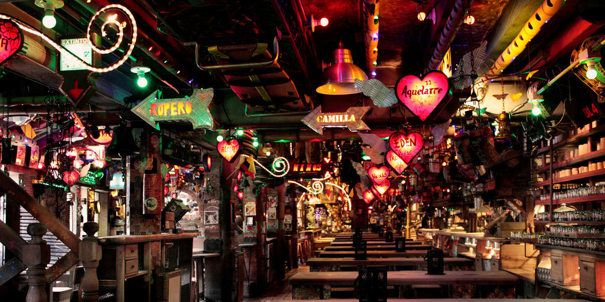
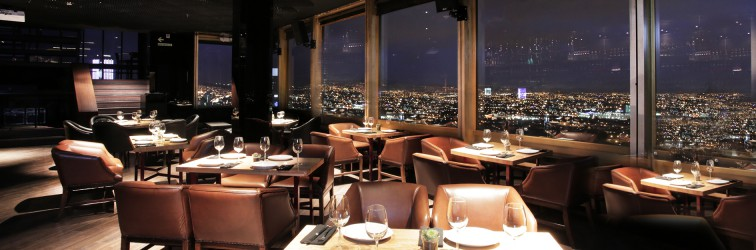

¡Porque los turistas nos vivimos la Noche!


Andres D.C.


Zona T es una zona delimitada por dos calles peatonales que forman una T, de ahí su nombre. Es una importante zona gastronómica, con pubs y cervecerías. En este lugar está la sucursal metropolitana de la famosa cadena de parrillas Andrés Carne de Res. La Zona T es el mejor lugar nocturno de la ciudad, con gran variedad de discotecas y antros.
La Zona T es parte de la Zona Rosa, y está 3 kilómetros al norte de Chapinero y a 10 kilómetros de La Candelaria.
28 de Agosto de 2018 - Bogotá Colombia.
Rolo de corazón y por nacimiento, se ha dedicado a buscar y resaltar los lugares más importantes y reconocidos de la ciudad de Bogotá D.C. Siempre busca conocer dichos lugares y resaltar sus caraxteristicas para los turistas que llegan a la ciudad.
Nació el 8 de Febrero de 1991, aquí en esta bella ciudad, tiene 27 años de edad, Economista de profesión, ha dedicado su vida a resaltar lo bella que es Bogotá, demostrando el por qué muchos turistas la escogen como destino Turistico, en donde encontramos diferentes, abundantes y vaiadas ofertas Gastronomicas, ofertas de Diversión, arte, recreación, Economía y vida. Ha buscado desmostrar que esta es una ciudad Pluricultural y variada, que con su frio y bellas montañas acoge a propios y extrangeros.
Te invito a visitar mi blog constatemente para que logres encontrar y desccubrir cosas bellas e innovadoras de la noche en Bogotá, que aunque parezca que duerme al apargar de las luces de cada Hogar, sigue reugiendo y dando la bienvenida con diversión y mucha diversidad a quienes se deciden a recorrerla bajo la tenue luz de la Luna.
28 de Agosto de 2018 - Bogotá Colombia.
La Calera, cuyo nombre indígena es Teusacá el cual significa “prisión”, es un municipio del departamento de Cundinamarca (Colombia) ubicado en el occidente de la Provincia del Guavio, a 18 km al nororiente de Bogotá, cerca de las localidades de Chapinero y Usauquen.
En La Calera podemos encontrar una diversidad de sitios turísticos como son sus aguas termales, la Capilla Colonial, la Capilla de la Casa de Gobierno, el cerro Cerco de Piedra, el cerro La Aurora, el cerro La Hondura, el cerro La Pita, el cerro San Vicente, la cordillera de la Sal y el conocido Parque Nacional Chingaza. Además asi como Bogota, La Calera cuenta con una variedad de discotecas y bares los cuales son frecuentemente visitados ya que estos ofrecen una hermosa vista panorámica de la capital; también La Calera nos ofrece en su plaza central el templo el cual tiene 2 lienzos de Gregorio Vásquez y varias edificaciones coloniales.
28 de Agosto de 2018 - Bogotá Colombia.